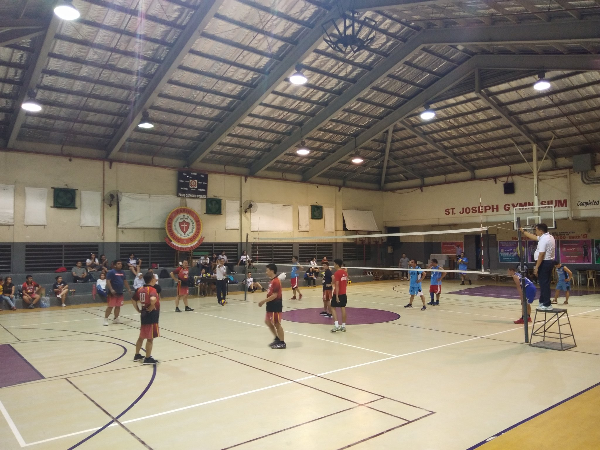

Our Facilities
Modern learning environments designed for academic excellence

Library
Well-stocked with books, journals, and digital resources to support learning and research.
View Details →
Crown Jewel
Multipurpose area used for community gatherings that highlight the school's Catholic identity.
View Details →Computer Laboratories
For hands-on IT education, programming, digital projects, and collaborative learning.
View Details →

St. Joseph Gymnasium
Spacious gymnasium, basketball court, and outdoor sports facilities for physical development.
View Details →
Campus Chapel
Sacred space for worship, prayer, and spiritual reflection for the PCC community.
View Details →Aula Minor
Aula Minor for school events, performances, and large gatherings.
View Details →